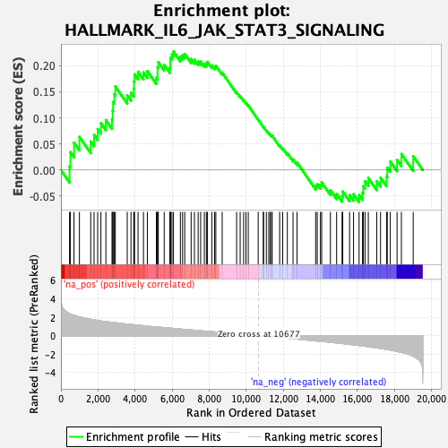
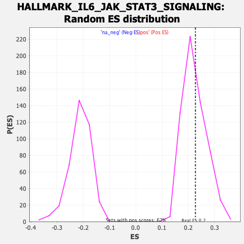

| | | Dataset | CK_basal |
| Phenotype | NoPhenotypeAvailable |
| Upregulated in class | na_pos |
| GeneSet | HALLMARK_IL6_JAK_STAT3_SIGNALING |
| Enrichment Score (ES) | 0.22705592 |
| Normalized Enrichment Score (NES) | 1.014323 |
| Nominal p-value | 0.41491085 |
| FDR q-value | 0.6920265 |
| FWER p-Value | 1.0 |
Table: GSEA Results Summary

Fig 1: Enrichment plot: HALLMARK_IL6_JAK_STAT3_SIGNALING
Profile of the Running ES Score & Positions of GeneSet Members on the Rank Ordered List
| SYMBOL | RANK IN GENE LIST | RANK METRIC SCORE | RUNNING ES | CORE ENRICHMENT | | 1 | TNF | 465 | 2.400 | 0.0067 | Yes |
| 2 | LTB | 512 | 2.359 | 0.0343 | Yes |
| 3 | DNTT | 706 | 2.209 | 0.0526 | Yes |
| 4 | CCL7 | 999 | 2.037 | 0.0635 | Yes |
| 5 | LTBR | 1608 | 1.777 | 0.0548 | Yes |
| 6 | IL1R1 | 1789 | 1.711 | 0.0674 | Yes |
| 7 | CD14 | 1983 | 1.652 | 0.0785 | Yes |
| 8 | PF4 | 2159 | 1.598 | 0.0898 | Yes |
| 9 | CD38 | 2426 | 1.527 | 0.0956 | Yes |
| 10 | ITGB3 | 2756 | 1.440 | 0.0970 | Yes |
| 11 | SOCS1 | 2792 | 1.430 | 0.1134 | Yes |
| 12 | CXCL3 | 2815 | 1.426 | 0.1305 | Yes |
| 13 | HMOX1 | 2882 | 1.410 | 0.1450 | Yes |
| 14 | TNFRSF21 | 2935 | 1.396 | 0.1601 | Yes |
| 15 | TNFRSF12A | 3578 | 1.255 | 0.1431 | Yes |
| 16 | PTPN2 | 3781 | 1.208 | 0.1481 | Yes |
| 17 | STAM2 | 3932 | 1.182 | 0.1554 | Yes |
| 18 | IL12RB1 | 3941 | 1.181 | 0.1701 | Yes |
| 19 | INHBE | 3973 | 1.176 | 0.1834 | Yes |
| 20 | IL1B | 4162 | 1.136 | 0.1882 | Yes |
| 21 | FAS | 4453 | 1.080 | 0.1871 | Yes |
| 22 | CD9 | 4664 | 1.035 | 0.1895 | Yes |
| 23 | CSF3R | 5150 | 0.942 | 0.1765 | Yes |
| 24 | IL17RA | 5215 | 0.929 | 0.1851 | Yes |
| 25 | IFNGR1 | 5217 | 0.928 | 0.1968 | Yes |
| 26 | IL9R | 5254 | 0.922 | 0.2067 | Yes |
| 27 | PDGFC | 5573 | 0.866 | 0.2014 | Yes |
| 28 | REG1A | 5878 | 0.817 | 0.1962 | Yes |
| 29 | EBI3 | 5910 | 0.810 | 0.2049 | Yes |
| 30 | PIM1 | 5911 | 0.809 | 0.2152 | Yes |
| 31 | CSF2RB | 5992 | 0.797 | 0.2212 | Yes |
| 32 | IL17RB | 6073 | 0.780 | 0.2271 | Yes |
| 33 | IL1R2 | 6445 | 0.714 | 0.2171 | No |
| 34 | IL3RA | 6564 | 0.695 | 0.2198 | No |
| 35 | SOCS3 | 6682 | 0.675 | 0.2224 | No |
| 36 | CRLF2 | 7027 | 0.618 | 0.2126 | No |
| 37 | ACVR1B | 7205 | 0.586 | 0.2110 | No |
| 38 | TLR2 | 7405 | 0.549 | 0.2077 | No |
| 39 | TYK2 | 7539 | 0.527 | 0.2076 | No |
| 40 | ITGA4 | 7739 | 0.495 | 0.2036 | No |
| 41 | STAT2 | 7849 | 0.476 | 0.2041 | No |
| 42 | CNTFR | 7908 | 0.468 | 0.2071 | No |
| 43 | BAK1 | 8143 | 0.430 | 0.2005 | No |
| 44 | IL4R | 8292 | 0.405 | 0.1981 | No |
| 45 | IFNAR1 | 8359 | 0.396 | 0.1997 | No |
| 46 | CSF2 | 8702 | 0.336 | 0.1864 | No |
| 47 | JUN | 9481 | 0.203 | 0.1490 | No |
| 48 | ACVRL1 | 9671 | 0.174 | 0.1415 | No |
| 49 | IRF9 | 9860 | 0.138 | 0.1335 | No |
| 50 | TGFB1 | 9984 | 0.119 | 0.1287 | No |
| 51 | IL10RB | 10108 | 0.101 | 0.1237 | No |
| 52 | IL18R1 | 10645 | 0.006 | 0.0962 | No |
| 53 | CD44 | 10923 | -0.044 | 0.0825 | No |
| 54 | MYD88 | 10932 | -0.046 | 0.0827 | No |
| 55 | CXCL11 | 11084 | -0.071 | 0.0758 | No |
| 56 | IL7 | 11214 | -0.092 | 0.0703 | No |
| 57 | CSF2RA | 11291 | -0.107 | 0.0678 | No |
| 58 | CXCL13 | 11369 | -0.122 | 0.0654 | No |
| 59 | CXCL10 | 11398 | -0.126 | 0.0656 | No |
| 60 | IL2RA | 11802 | -0.194 | 0.0473 | No |
| 61 | HAX1 | 11968 | -0.224 | 0.0417 | No |
| 62 | IL13RA1 | 12218 | -0.270 | 0.0323 | No |
| 63 | TNFRSF1B | 12524 | -0.327 | 0.0208 | No |
| 64 | GRB2 | 12743 | -0.366 | 0.0142 | No |
| 65 | OSMR | 13747 | -0.563 | -0.0302 | No |
| 66 | CXCL1 | 13832 | -0.581 | -0.0272 | No |
| 67 | PTPN1 | 14004 | -0.614 | -0.0281 | No |
| 68 | CD36 | 14070 | -0.624 | -0.0235 | No |
| 69 | CXCL9 | 14542 | -0.716 | -0.0386 | No |
| 70 | IL6 | 14877 | -0.785 | -0.0458 | No |
| 71 | CBL | 15171 | -0.848 | -0.0501 | No |
| 72 | PLA2G2A | 15207 | -0.856 | -0.0410 | No |
| 73 | IL2RG | 15577 | -0.946 | -0.0479 | No |
| 74 | IFNGR2 | 15791 | -1.000 | -0.0462 | No |
| 75 | MAP3K8 | 16089 | -1.069 | -0.0478 | No |
| 76 | CCR1 | 16275 | -1.111 | -0.0432 | No |
| 77 | IRF1 | 16317 | -1.120 | -0.0310 | No |
| 78 | IL15RA | 16409 | -1.143 | -0.0211 | No |
| 79 | LEPR | 16587 | -1.192 | -0.0151 | No |
| 80 | STAT1 | 17041 | -1.325 | -0.0215 | No |
| 81 | PTPN11 | 17247 | -1.380 | -0.0145 | No |
| 82 | CSF1 | 17571 | -1.483 | -0.0122 | No |
| 83 | STAT3 | 17611 | -1.498 | 0.0049 | No |
| 84 | A2M | 17773 | -1.561 | 0.0165 | No |
| 85 | TNFRSF1A | 18138 | -1.716 | 0.0196 | No |
| 86 | PIK3R5 | 18372 | -1.817 | 0.0308 | No |
| 87 | IL6ST | 19010 | -2.231 | 0.0264 | No |
Table: GSEA details [plain text format]

Fig 2: HALLMARK_IL6_JAK_STAT3_SIGNALING: Random ES distribution
Gene set null distribution of ES for HALLMARK_IL6_JAK_STAT3_SIGNALING